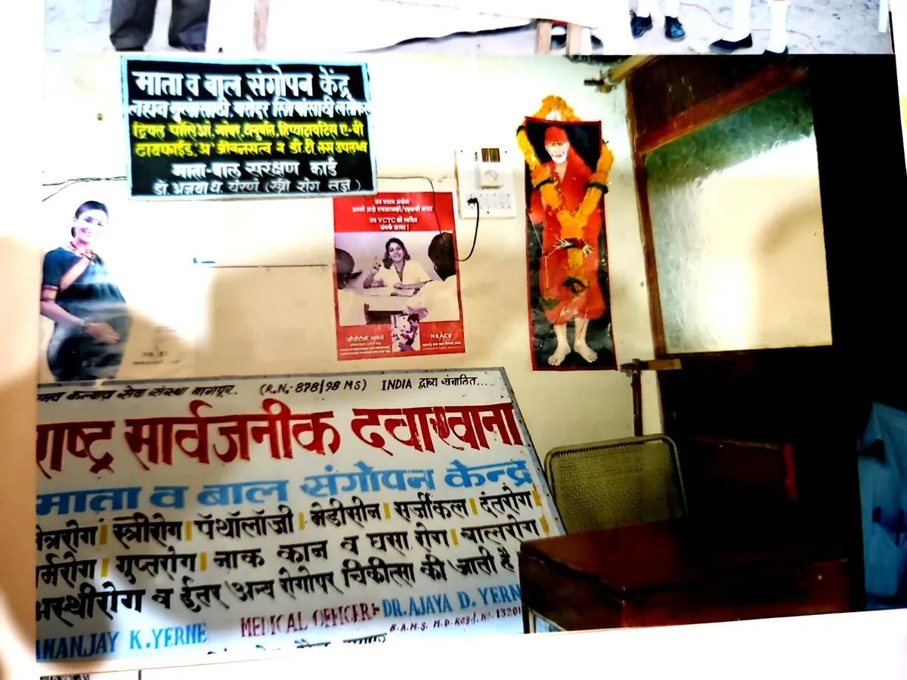
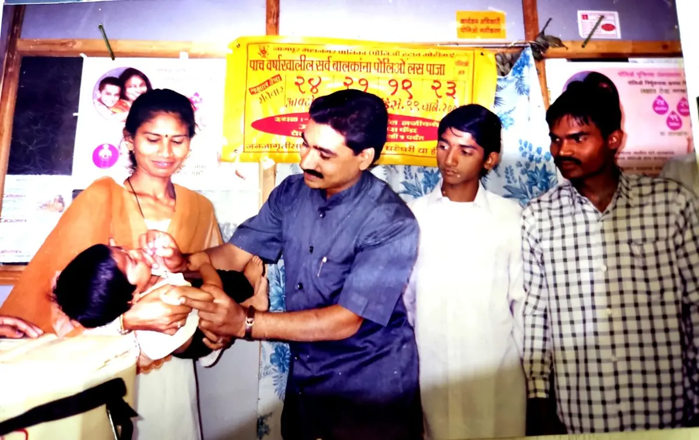

From one clinic to a registered foundation
Vishavabhartiya Foundation was incorporated on 12 March 2026 as a not-for-profit company limited by guarantee under Section 8 of the Companies Act, 2013 (Licence No. 181714). Its registered office is at Diamond Nagar, Kharbi Main Road, Nagpur.
It carries forward the work that the founder, Dr. Dhananjay K. Yerne, began in 1998 — a public hospital and mother-and-child health centre, daily free eye check-ups, and, through the earlier organisation Vishvabhartiya Manav Kalyan Sewa Sanstha (Reg. No. 15456), eye camps, polio drives, HIV/AIDS and leprosy awareness and school programmes in Nagpur and Bhandara districts.
The name joins विश्व (the world) and भारतीय (Indian). Our emblem carries the motto रोगोत्मूलम् दीर्घजीवनम्, “root out disease, live long”, and an eye for the eye care at the heart of our work.

A healthy, educated and self-reliant society
where every person, whatever their income or where they live, can see clearly, stay healthy, learn and live with dignity.
Take care to people's doorsteps
We bring free eye care, health camps and awareness to the communities that need them most, build skills among youth and women, protect the environment, and work with government, CSR partners and citizens transparently.
What the Foundation is set up to do
Summarised from the objects in our Memorandum of Association. Read the MOA
Preventive health & eye care
Run free eye check-up and health camps, distribute spectacles, and refer patients for treatment.
Health awareness
Educate communities on eye health, communicable diseases, tobacco, nutrition and hygiene.
Education
Support schools and students; run competitions and awareness programmes that build confidence.
Skill development
Offer vocational and life-skill training for youth and women.
Women & children
Promote mother-and-child health and women's social and economic empowerment.
Environment
Organise tree plantation, cleanliness and plastic-reduction drives.
Civic & social awareness
Encourage voter enrolment, rights awareness and access to government schemes.
Welfare of the disadvantaged
Serve the elderly, differently-abled, labourers, slum dwellers and farmers without discrimination.
Two chapters, one purpose
Vishavabhartiya Foundation was incorporated on 12 March 2026 and carries forward the community health, eye-care and social service initiatives begun in 1998 by its founder and the earlier organisation, Vishvabhartiya Manav Kalyan Sewa Sanstha.

Founder & earlier organisation legacy · 1998–2025
- 1 May 1998Public hospital and mother-child health centre opened
Started by the founder on Kharbi Main Road, Nagpur, with free eye check-ups.
- 1998Vishvabhartiya Manav Kalyan Sewa Sanstha registered
Reg. No. 15456 (Nagpur) — the earlier organisation through which camps and awareness work were run.
- 1998–2023Pulse Polio volunteering every year
Support to the Nagpur Municipal Corporation immunisation drive.
- 2004HIV/AIDS awareness and personality development
School and college competitions; personality development camp with UNESCO Club, Nagpur.
- 2005Science and environment fair
With Marathi Vigyan Parishad.
- —Leprosy Elimination Action Programme (LEAP)
Volunteer training across Bhandara district villages, promoted by ALERT India and supported by ANESVAD Foundation.
Vishavabhartiya Foundation institutional journey · 2026 →
- 4 Mar 2026ISO 9001:2015 certification
Independent quality-management certification (Royal Assessments Pvt. Ltd.).
- 12 Mar 2026Vishavabhartiya Foundation incorporated
Section 8 not-for-profit company under the Companies Act, 2013 (Licence No. 181714).
- 14 Mar 2026NGO Darpan, e-Anudaan and Udyam
Listed on government NGO portals.
- 30 Mar 202612A and 80G (provisional)
Income Tax registration and approval, AY 2026-27 to AY 2028-29.
- 7 Apr 2026CSR-1 registration
Eligible to implement CSR projects (CSR00109367).
- 2026First Foundation programmes
Earth Day (22 April) and International Yoga Day (21 June), covered by the Nagpur press.
Our Partners
Organisations we work with now, and those the founder and the earlier Sanstha collaborated with. Listing here shows collaboration on the programme named, not endorsement.
Partners & collaborators of the Foundation
2026 →Earlier collaborations (founder & earlier Sanstha)
1998–2025Would you like to partner with us? CSR Partnerships · Contact us
Board of Directors
The Foundation is governed by a three-member Board of Directors.

Dr. Dhananjay Kewalram Yerne
Managing Director & CEO · Founder
“A service to man is a service to God.”
An optometrist and vision therapist (M.Sc. Optometry & Ophthalmic Technology, Mewar University; D.O.T., Nagpur, 1995), Dr. Yerne has run free eye check-ups since 1998 at Maharashtra Hospital & Optical, Nagpur. He founded Vishvabhartiya Manav Kalyan Sewa Sanstha and led camps in slums, villages, schools, jails and highway transport hubs.
He is a member of the Indian Ophthalmic Association and has written public-awareness articles on eye health in the Navbharat newspaper. His personal honours are listed under Founder's Honours & Recognition.

Dr. Ajaya Dhananjay Yerne
DirectorCo-founder and subscriber to the Memorandum; health camps and women's programmes.

Dr. Tejendra Dhananjay Yerne
DirectorCo-founder and subscriber to the Memorandum; a doctor supporting health camps and awareness.
Volunteers & associates
Our strengthDoctors, students and citizens who join our camps and drives, including Dr. Dhanashri Dhobale, Yogesh Raut, Shivani Kadam, Roshani Chauhan and Shreya Dandekar.
Help us take care to one more family
Your donation supports free eye care, health camps and community programmes. Donations are eligible for tax benefit under Section 80G.